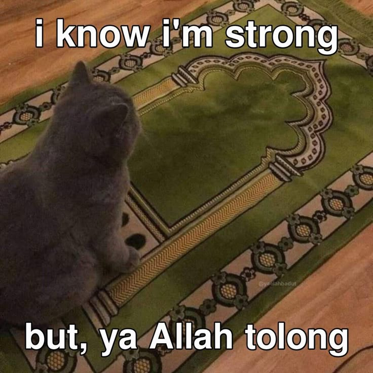

Rahmadanis Danang Kumala
Layout website ini dirancang untuk praktikum mata kuliah Perancangan dan Pemrograman Web.
Dengan menggunakan perpaduan teknik CSS Grid untuk kerangka tata letak utama dan Flexbox pada bagian navigasi header, serta penerapan Responsive Design.
Gambar Cuking
